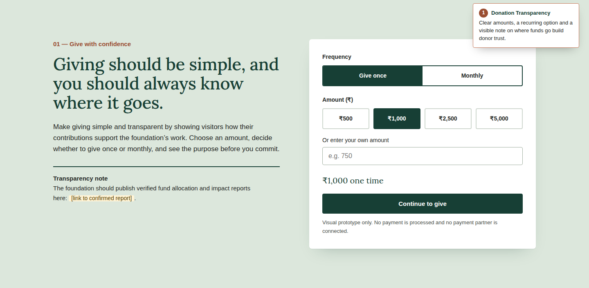
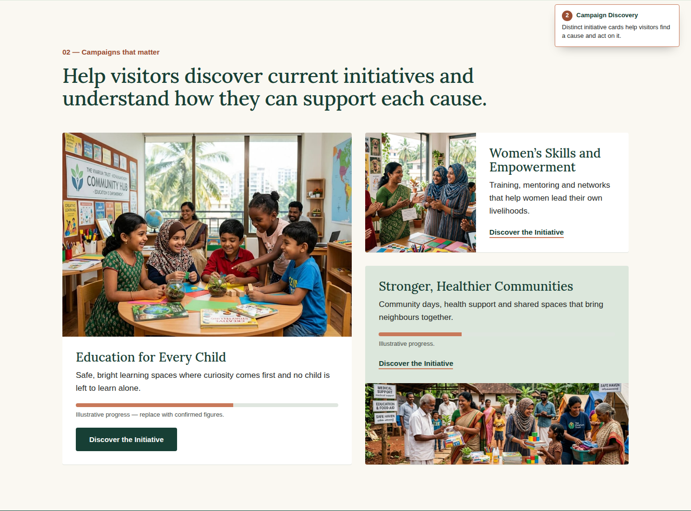
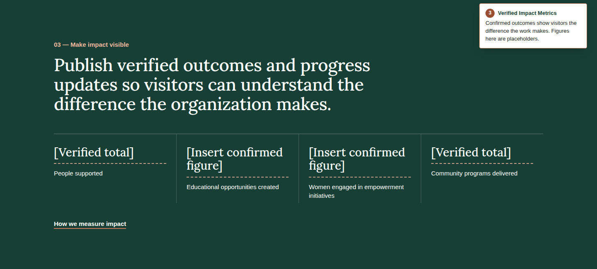
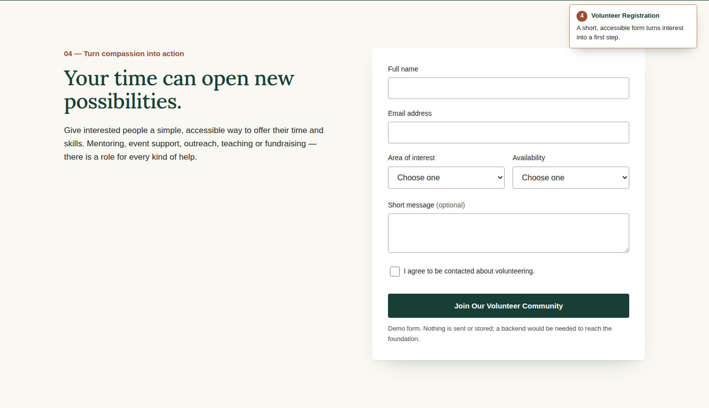
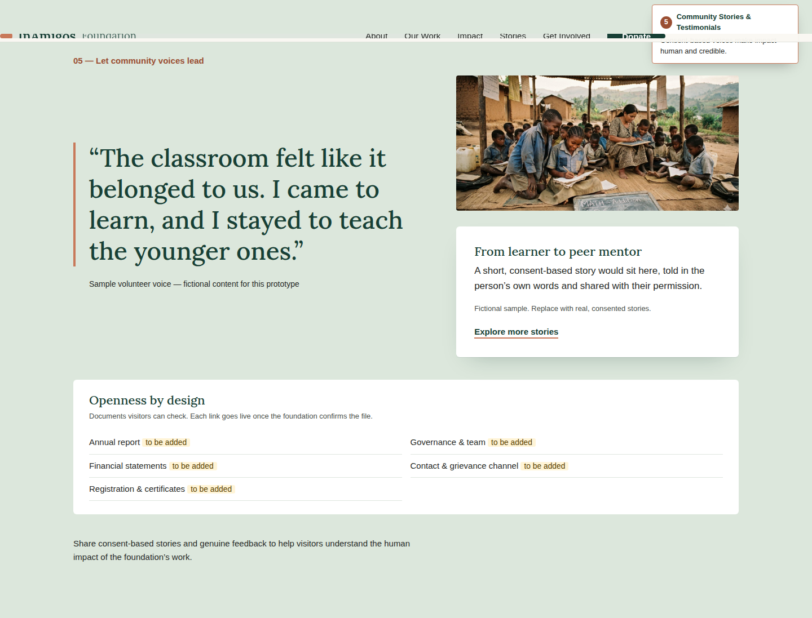

InAmigos Foundation · Website design review
Visual prototype with illustrative content. Figures are placeholders and sample stories are fictional.

Simple amounts, a monthly option and a clear note on where money goes build donor confidence.

Distinct initiative cards help visitors find a cause and take the next step.

Confirmed outcomes show the difference the work makes. Placeholders stand in until figures are verified.

A short, accessible form with clear validation turns interest into a first step.

Consent-based voices make impact human and credible. Sample content here is fictional.
Prototype only: no payments are processed and no form data is sent. Contact details and registration information are to be confirmed by the foundation.